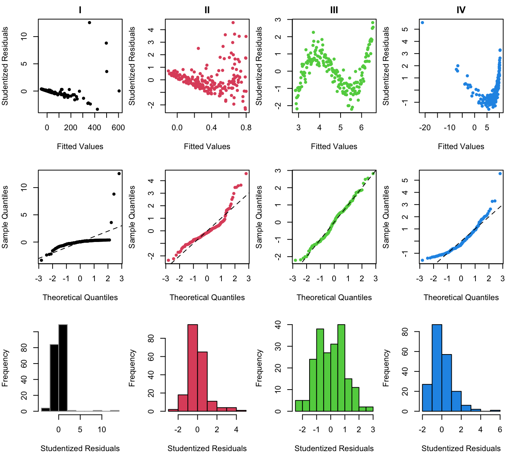
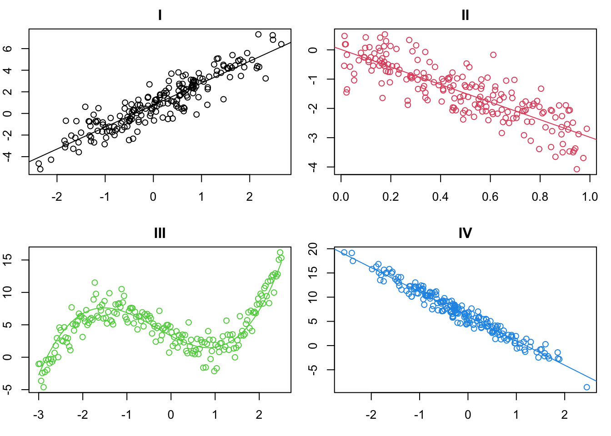

Practice building residual diagnostic plots for determining violations of SLR assumptions.
Practice matching violations with remedies/transformations evaluating resulting residuals for models fit to transformed data.
Practicing diagnostics and transformations
The file transforms.csv on the course website contains 4 pairs of Xs and Ys. The {\sf R} code from lecture 5B will also be very helpful.
For each pair:
Fit the linear regression model Y = \beta_0 + \beta_1 X + \varepsilon, \varepsilon \sim \mathrm{N}(0,\sigma^2). Plot the data and fitted line.
Provide a scatterplot, normal Q-Q plot, and histogram for the studentized regression residuals.
Using the residual scatterplots, state how the SLR model assumptions are violated.
Determine the data transformation to correct the problems in 3, fit the corresponding regression model, and plot the transformed data with new fitted line.
Provide plots to show that your transformations have (mostly) fixed the model violations.
Solution
1. Fit the linear regression model. Plot the data and fitted line.
2. Provide a scatterplot, normal Q-Q plot, and histogram for the studentized regression residuals.
par(mfrow=c(3,4), mar=c(4,4,2,0.5)) # you might have to make # the plot window big to # fit everythingplot(lm1$fitted, rstudent(lm1), col=1,xlab="Fitted Values", ylab="Studentized Residuals", pch=20, main="I")plot(lm2$fitted, rstudent(lm2), col=2,xlab="Fitted Values", ylab="Studentized Residuals", pch=20, main="II")plot(lm3$fitted, rstudent(lm3), col=3,xlab="Fitted Values", ylab="Studentized Residuals", pch=20, main="III")plot(lm4$fitted, rstudent(lm4), col=4,xlab="Fitted Values", ylab="Studentized Residuals", pch=20, main="IV")qqnorm(rstudent(lm1), pch=20, col=1, main="" )abline(a=0,b=1,lty=2)qqnorm(rstudent(lm2), pch=20, col=2, main="" )abline(a=0,b=1,lty=2)qqnorm(rstudent(lm3), pch=20, col=3, main="" )abline(a=0,b=1,lty=2)qqnorm(rstudent(lm4), pch=20, col=4, main="" )abline(a=0,b=1,lty=2)hist(rstudent(lm1), col=1, xlab="Studentized Residuals", main="", border=8)hist(rstudent(lm2), col=2, xlab="Studentized Residuals", main="")hist(rstudent(lm3), col=3, xlab="Studentized Residuals", main="")hist(rstudent(lm4), col=4, xlab="Studentized Residuals", main="")

3. Using the residual scatterplots, state how the SLR model assumptions are violated.
Set 1: Xs are clumpy AND the variance seems non-constant. It looks a lot like the GDP data from class. Since both Xs and Ys are strictly positive, we can try a log-log transform.
Set 2: Data have non-constant variance – should probably log transform the Ys
Set 3: Data have an underlying non-linear pattern. Add in an x^2 and x^3 term in this case.
Set 4: X values are very clumpy and all positive. Try log transform of the Xs
4. Determine the data transformation to correct the problems in 3, fit the corresponding regression model, and plot the transformed data with new fitted line.
### the fixes are as follows:logX1<-log(X1)logY1 <-log(Y1)logY2 <-log(Y2)X3sq <- X3^2X3cube<-X3^3logX4 <-log(X4)### re-run the regressions and residual plots to show this workedlm1 <-lm(logY1 ~ logX1)lm2 <-lm(logY2 ~ X2)lm3 <-lm(Y3 ~ X3+ X3sq + X3cube)lm4 <-lm(Y4 ~ logX4)## plot points and linespar(mfrow=c(2,2), mar=c(3,2,2,1))plot(logX1, logY1, col=1, main="I"); abline(lm1, col=1)plot(X2, logY2, col=2, main="II"); abline(lm2, col=2)plot(X3, Y3, col=3, main="III")xx3 <-seq(min(X3), max(X3), length=1000)lines(xx3, lm3$coef[1] + lm3$coef[2]*xx3 + lm3$coef[3]*xx3^2+lm3$coef[3]*xx3^3, col=3)plot(logX4, Y4, col=4, main="IV"); abline(lm4, col=4)

5. Provide plots to show that your transformations have (mostly) fixed the model violations.